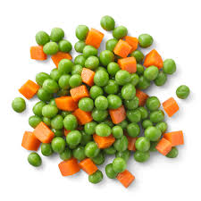

The following a list of the ingredients needed to cook fried rice. Note that you can leave things out or add things in based on your preference!
For example, if you aren't a fan of vegetables you could choose to leave out the carrots and peas. If you've ever been to a Japanese steak house you've probably heard of yum yum sauce. I typically add a lot of it to my rice when im making it however you can experiment with the amount you add for yourself to get it to your liking.
